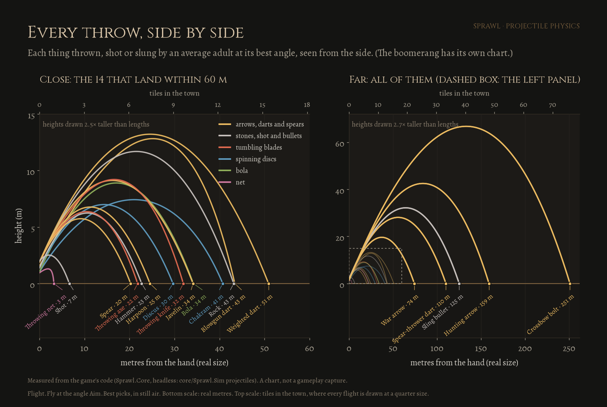
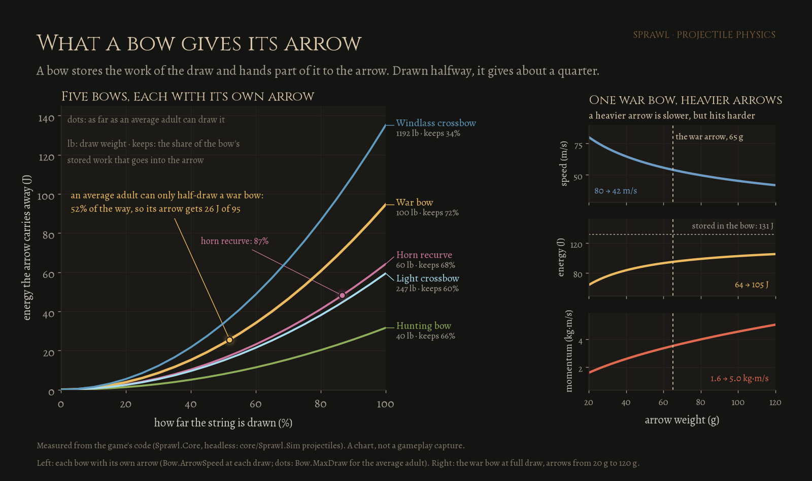
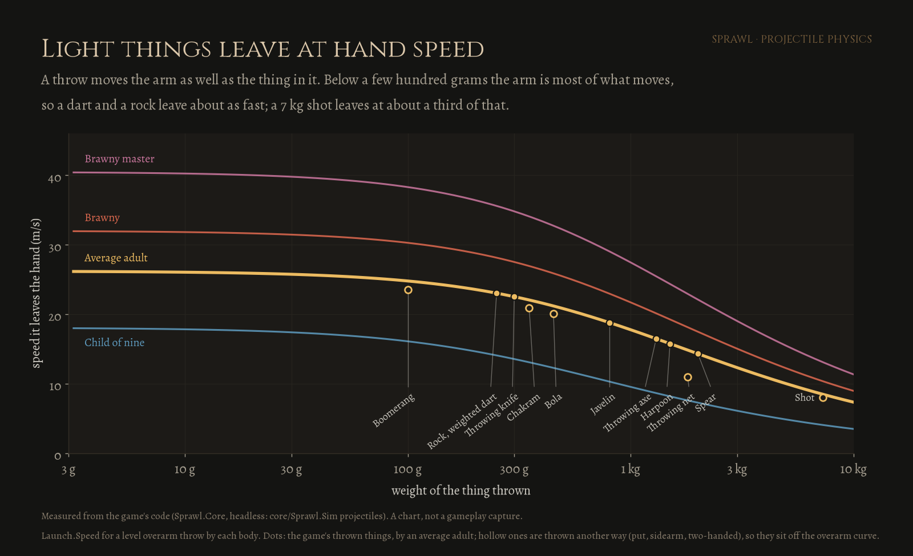
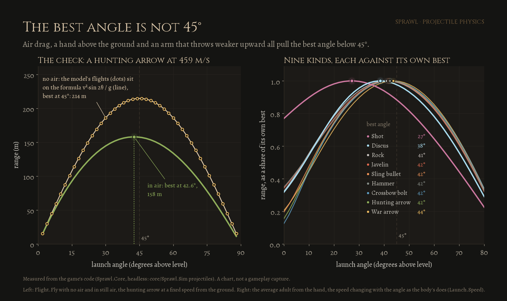
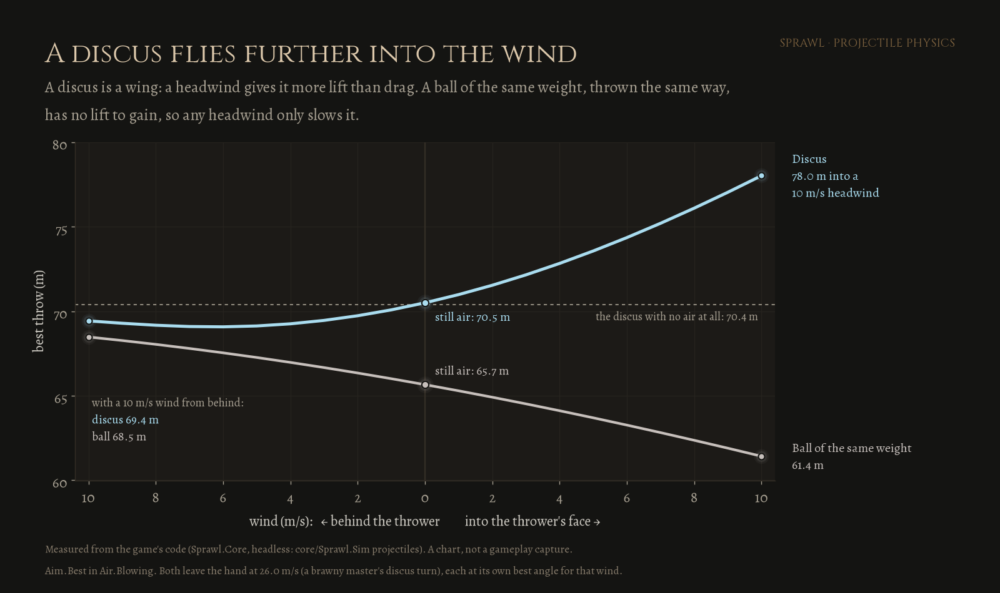
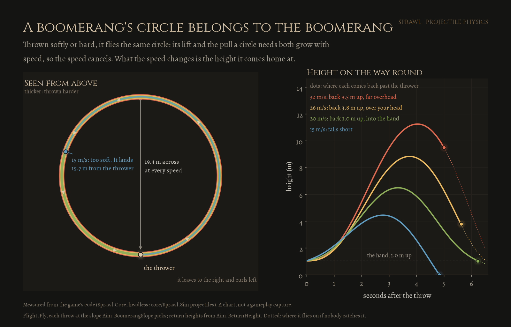
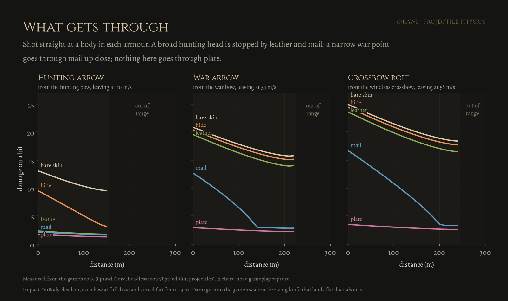
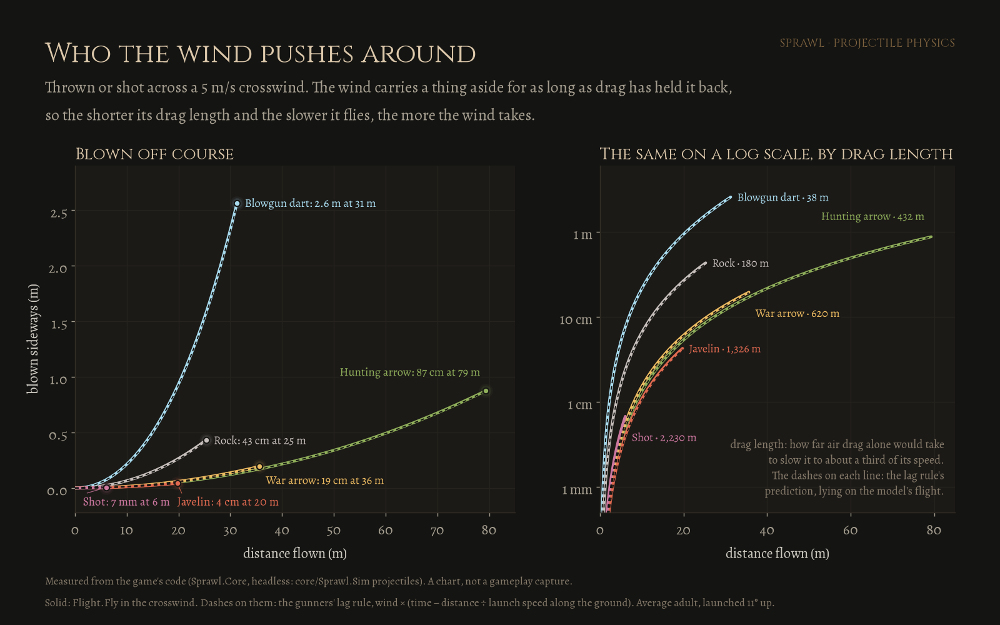
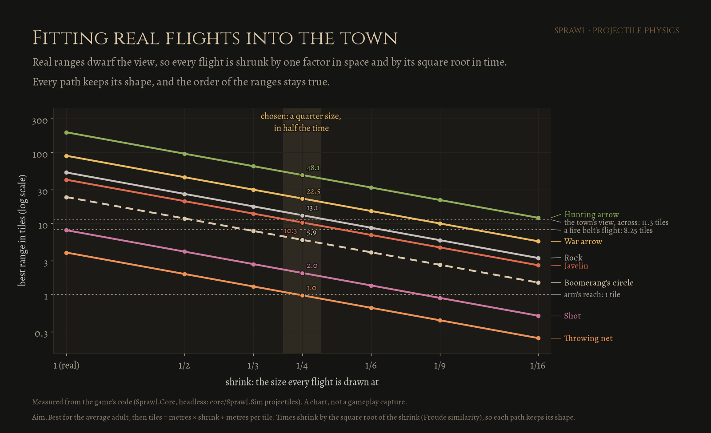

7 November 2026
Sticks, stones and boomerangs
7 November 2026
Everything you can shoot, throw or sling in Sprawl now flies by real mechanics: one set of rules for a pebble, a war bow, a discus and a boomerang that comes back to your hand.
Yesterday magic got its physics. Today it is the turn of everything else that flies. Until now nothing physical left anyone's hand in Sprawl: the only things in the air were spell bolts, which glide along at a steady speed and never fall. The plan for bows and thrown stones was written down a long time ago, but it never said how they fly. So before anyone draws a bow in Oakwell, we built the thing underneath it.
One rule for everything
The easy way to make a game's weapons is a table: the short bow has this range, the crossbow that one, the javelin another. Every new weapon is a new row, and nothing explains the numbers. Sprawl's swords already work differently: a weapon's length sets its reach and its weight sets the damage, one rule for all of them. Projectiles now work the same way. A projectile is just a thing with a mass, a size and a shape, and everything else comes out of the physics.
Here is the whole family, each thrown by an ordinary adult at its best angle. A thrown net barely leaves your hands. A crossbow bolt flies a quarter of a kilometre.

All the sizes are real ones. A war arrow weighs about 65 grams, the athletes' shot 7.26 kilos, a boomerang a hundred grams. We only had to choose a few numbers, like how much effort a body can put into one throw, and we chose them so the results match what people actually manage. An untrained adult throws a rock about 43 metres. A 40 pound hunting bow shoots about 160. A war bow, in the hands of someone strong enough to draw it, about 220.
A bow is an arm
This was the nicest surprise. A bow stores the work you put into drawing it, then gives it to the arrow, but not all of it, because the bow's own limbs and string have to move too. Your arm works exactly the same way when you throw: you put effort into the throw, and some of it goes into moving your own arm.
That one idea explains a lot. A heavier arrow from the same bow leaves more slowly but carries more energy and more punch. A pebble and a dart leave your hand at almost the same speed, because most of what you are moving is your arm. A shot put leaves at a third of the speed of a rock. And a heavy crossbow, for all its fearsome pull, turns only about a third of its stored energy into the bolt, which is just what tests of real ones have found.

Your character's body matters too. How strong, tall, young or old they are changes how hard they throw and what bow they can draw. An ordinary adult can only pull a 100 pound war bow about halfway, which is exactly why war bows were for trained archers. Practice adds technique and a steadier aim.

Why 45 degrees is wrong
At school you learn that the furthest throw is at 45 degrees. That is only true with no air, thrown from the ground. Our model gets that textbook answer exactly when you take the air away, which is how we know it is right. Put the air back and the best angle drops: about 42 degrees for an arrow. Throw from a height and it drops further. And for heavy things it drops a lot, because your body is weaker pushing upward and has to lift the weight as well. A strong thrower's best shot put comes out at 36 degrees, which is what coaches see.

Two strange flyers
A discus is not a lump. It is a wing, held steady by its spin, and it glides. It flies further than a ball of the same weight, and it does something that sounds wrong but is true of real discus throwers: it flies further into a headwind. Ours goes from 70 metres in still air to 78 into a stiff breeze.

The boomerang is our favourite. Its spinning wings pull it round in a circle, and the size of that circle belongs to the boomerang, not to the throw. Throw it softly or hard and it flies the same circle, about 19 metres across. Too soft and it comes down before it gets round. Just right and it comes back to your hand. Too hard and it comes back over your head.

What gets through
When something hits, what matters is the energy it has left and the shape of its tip. A wide hunting arrowhead cuts a nasty wound in bare skin or a boar's hide, but leather or chain mail stops it. A narrow war arrow punches through mail up close. Nothing a bow or crossbow shoots here goes through plate, although the blow still bruises. A thrown knife only lands point first at the right distance, because it turns over as it flies, so a thrower has to learn the distance.

Wind matters as well. The weather's wind blows things off course, and it pushes light, draggy things the most: a blowgun dart drifts two and a half metres over thirty, a shot put seven millimetres. Our numbers match a rule artillery officers worked out in the nineteenth century to within centimetres.

Fitting it into the town
Here is the problem. Real arrows fly hundreds of metres, but the camera in Oakwell shows about a dozen tiles. So every flight is drawn at a quarter of its real size and plays in half the time. That is the same trick engineers use to test model ships in a tank: shrink the lengths, shrink the times by the square root, and everything keeps exactly the same shape. The order stays true, so a war bow still out-shoots a rock, but now a thrown rock crosses about one screen, a net reaches just past your arm, and a boomerang's circle fits in view. Bows shoot far past the edge of the screen, as the long weapons should.

What went wrong
The boomerang went wrong three times. The first one, thrown hard, flew a circle eighty metres wide, which a boomerang's circle should never do. The second one climbed, and climbed, until the numbers broke completely: we had pointed its lift straight up instead of across its path, so every climb gave it more energy for free. The third climbed so high on a hard throw that it stalled. The one in the game now got there by taking the real result about the circle seriously.
We also caught a quieter problem: the same volley of arrows gave a slightly different record of what it hit depending on how the game's frames were cut, which a game server would hate. Every arrow now moves on one shared clock, and a test cuts the same volley three different ways to prove it. And an arrow that only just got through chain mail did less damage than one that bounced off it. It now never does.
What comes next
The physics is ready, but nobody can pick up a bow yet. That is the next step: a bow you can wear, a quiver, holding to draw and letting go to loose, arrows you can pull out of what you shot. After that come magic arrows. An arrow that flies through your own wind field should go further, and the physics is already waiting for it.